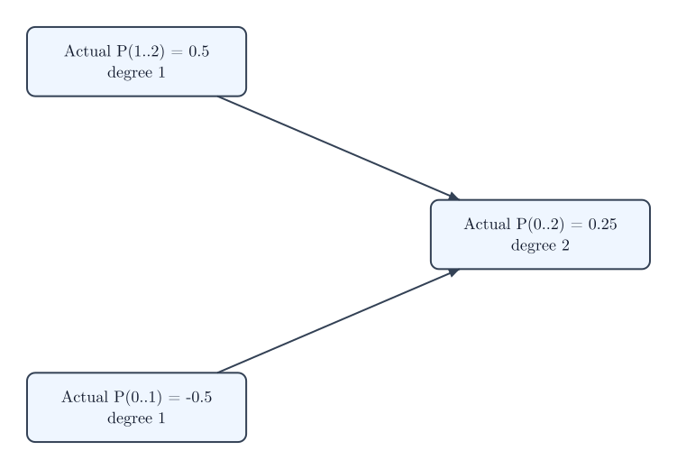
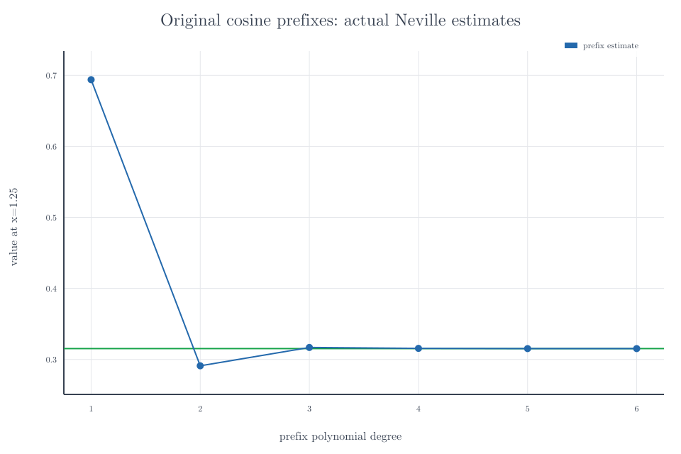
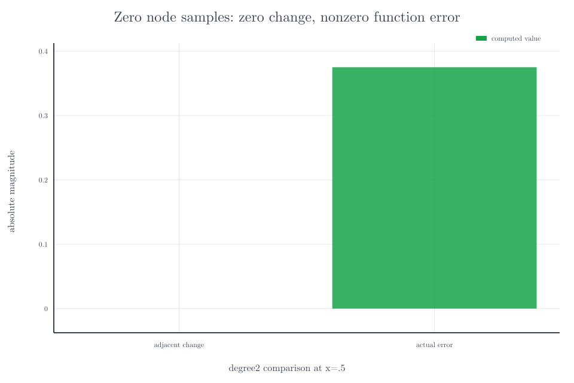
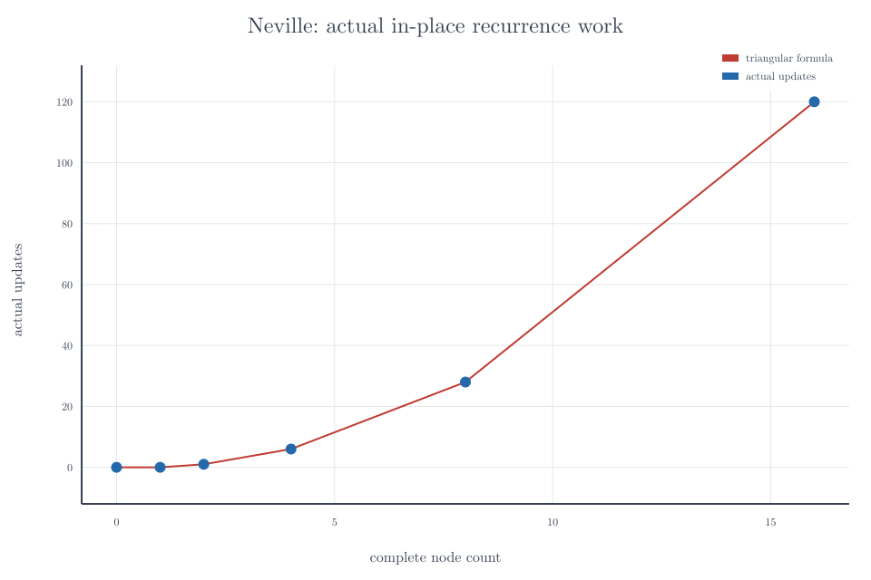

Neville interpolation: actual triangular updates
Abstract
Evaluate an interpolating polynomial at one query without constructing its coefficients. Actual canonical in-place updates explain a hand-checkable quadratic example, then retain the original cosine-prefix experiment. A zero-sample counterexample distinguishes observed agreement from a certified error estimate, and exact work counts expose the cost of repeated prefix calls.
Combine overlapping prefix interpolants
Let P_(i..j)(x) interpolate nodes i through j at a fixed query x. Two overlapping degree-(d−1) interpolants combine as P_(i..j)=((x−x_i)P_(i+1..j)−(x−x_j)P_(i..j−1))/(x_j−x_i). At each node in their union the formula reproduces the corresponding y value; its degree is at most d. Distinct nodes make that polynomial unique, proving the recurrence by induction from P_(i..i)=y_i.
The native producer initializes p=ys and updates ending indices in descending order for each increasing degree. Both operands then still belong to the preceding degree. Reversing that inner order would reuse a newly overwritten value. The captured records below are its actual operands and assignments, not a report-side recurrence.
Three nodes and a hand-checkable square
Nodes−1,0,1 with values1,0,1 interpolate x². At x=.5 the two linear estimates are−.5 and.5, and the final quadratic gives.25. The final working vector contains retained mixed-degree entries, not an entire triangular table. Its three actual update records explain the complete computation.
#include <dm/dm.hpp>
int main() {
std::filesystem::create_directories("build");
auto t = dm::algorithms::neville_trace({-1, 0, 1}, {1, 0, 1}, .5);
dm::graphics::Diagram d;
std::print("| actual degree | first node index | last node index | actual right operand | actual left " "operand | committed value |\n| ---: | ---: | ---: | ---: | ---: | ---: |\n");
for (std::size_t i = 0; i < t.steps.size(); ++i) {
auto &s = t.steps[i];
std::print("| {} | {} | {} | {} | {} | {} |\n", s.degree, s.first,
s.last, s.right_before, s.left_before, s.value);
d.node(std::to_string(i),
{s.degree == 2 ? 7. : 0., s.degree == 2 ? 0. : 3. - 6. * i},
std::format("Actual P({}..{}) = {}\ndegree {}", s.first, s.last,
s.value, s.degree));
}
d.edge("0", "2").edge("1", "2");
d.save_svg("build/neville_tiny.svg");
std::print("\nActual final value {}; {} recurrence updates.\n",
t.analysis.value, t.analysis.updates);
}| actual degree | first node index | last node index | actual right operand | actual left operand | committed value |
|---|---|---|---|---|---|
| 1 | 1 | 2 | 1 | 0 | 0.5 |
| 1 | 0 | 1 | 0 | 1 | -0.5 |
| 2 | 0 | 2 | 0.5 | -0.5 | 0.25 |
Actual final value 0.25; 3 recurrence updates.

Retain the original cosine table and all its prefixes
The original nodes are0,.5,1,1.5,2,2.5,3 and the query is1.25. Every prefix of length2 through7 is retained in its original order, with the native helper computing cos at those nodes and the analytic cos(1.25) reference. Contrary to the old explanation, the first two nodes0,.5 are not the nearest bracketing pair: that first prefix extrapolates. Adding nodes need not monotonically improve a polynomial approximation or its floating evaluation. The table reports actual errors rather than asserting monotone convergence or a guaranteed number of digits.
#include <dm/dm.hpp>
int main() {
std::filesystem::create_directories("build");
auto s = dm::algorithms::neville_cosine_study();
std::print("| degree | actual prefix estimate | absolute reference error | adjacent estimate change " "|\n| ---: | ---: | ---: | ---: |\n");
for (std::size_t i = 0; i < s.degrees.size(); ++i)
std::print("| {} | {} | {} | {} |\n", s.degrees[i], s.estimates[i],
s.absolute_errors[i], s.successive_changes[i]);
auto p = dm::graphics::RPlot::create();
p.lines(s.degrees, s.estimates, "prefix estimate", {36, 105, 172}).points(
s.degrees, s.estimates, "", {36, 105, 172}, 5).abline_h(s.truth,
{22, 163, 74}, 2).title("Original cosine prefixes: actual Neville estimates").x_label("prefix polynomial degree").y_label("value at x=1.25").save_svg("build/neville_original.svg");
std::print("\nAnalytic cos(1.25)={}; first adjacent change is a placeholder with no predecessor.\n",
s.truth);
}| degree | actual prefix estimate | absolute reference error | adjacent estimate change |
|---|---|---|---|
| 1 | 0.6939564047259319 | 0.3786340423306632 | 0 |
| 2 | 0.2910886211397961 | 0.024233741255472563 | 0.4028677835861358 |
| 3 | 0.3168942366817967 | 0.0015718742865280522 | 0.025805615542000615 |
| 4 | 0.31562908260252354 | 0.0003067202072548625 | 0.0012651540792731897 |
| 5 | 0.31529922714904235 | 2.313524622632457e-05 | 0.00032985545348118706 |
| 6 | 0.3153042963297073 | 1.8066065561372913e-05 | 5.069180664951656e-06 |
Analytic cos(1.25)=0.3153223623952687; first adjacent change is a placeholder with no predecessor.

Agreement is not an error certificate
Take f(x)=x(x−1)(x−2), sampled only at0,1,2. All three observed values are exactly zero. Both the degree1 and degree2 prefix interpolants are therefore identically zero, and their adjacent change is zero. Yet f(.5)=.375. The native counterexample fixture evaluates those same prefix calls, so the difference of two table estimates demonstrably does not bound the unknown-function error.
A classical interpolation remainder uses f^(n)(ξ)·Π_j(x−x_j)/n! under appropriate differentiability and interval conditions; an actual bound requires a justified derivative bound. Neither small table differences nor stable-looking finite outputs supply that missing information. Neville and direct Lagrange evaluate the same exact polynomial, but no universal floating-point stability ranking is claimed. High degrees, clustered nodes and extrapolation can still be ill-conditioned.
#include <dm/dm.hpp>
int main() {
std::filesystem::create_directories("build");
auto s = dm::algorithms::neville_zero_sample_study();
std::print("| degree | actual interpolant | actual adjacent change | true function value | actual " "absolute error |\n| ---: | ---: | ---: | ---: | ---: |\n");
for (std::size_t i = 0; i < s.degrees.size(); ++i)
std::print("| {} | {} | {} | {} | {} |\n", s.degrees[i], s.estimates[i],
s.successive_changes[i], s.truth, s.absolute_errors[i]);
auto p =
dm::graphics::RPlot::barplot({s.successive_changes.back(),
s.absolute_errors.back()},
{"adjacent change", "actual error"},
"computed value");
p.title("Zero node samples: zero change, nonzero function error").x_label(
"degree2 comparison at x=.5").y_label("absolute magnitude").save_svg(
"build/neville_counterexample.svg");
}| degree | actual interpolant | actual adjacent change | true function value | actual absolute error |
|---|---|---|---|---|
| 1 | 0 | 0 | 0.375 | 0.375 |
| 2 | 0 | 0 | 0.375 | 0.375 |

Actual work, ownership and complete guards
A complete n-node call makes n(n−1)/2 updates and retains n working values. Complete pairwise distinctness validation also costs O(n²), so ordinary evaluation remains O(n²) work and O(n) working storage, including empty and singleton conventions. Repeating every prefix through n nodes costs O(n³) in total; it is not one quadratic call. The original seven-node study is a fixed small instance of that repeated work.
Matched shapes, finite values/query and distinct abscissae are checked completely. Nodes may be unsorted; literal caller order determines floating arithmetic. Empty matched inputs retain the historical zero placeholder, not a data-driven interpolating polynomial. Trace and analyzed calls default to1000000 nodes; ordinary convenience evaluation disables that optional cap. Owned trace units are exactly1+3n+n(n−1)/2: query, both input vectors, final working values and actual fixed-size update records. Its separate default1000000-unit quota is pre-admitted before copying or evaluation; zero disables either policy.
Ordinary finite double operations preserve the legacy recurrence order. Nonfinite double differences or products use a long-double fallback for that actual update, including opposite-sign full-width nodes. A final nonfinite double value throws instead of returning an unchecked infinity or NaN. This guards representation, not conditioning or mathematical error.
#include <dm/dm.hpp>
int main() {
std::filesystem::create_directories("build");
std::vector<double> nodes, actual, formula;
std::print("| input nodes | actual recurrence updates | triangular count | complete trace units |\n| " "---: | ---: | ---: | ---: |\n");
for (int n : {0, 1, 2, 4, 8, 16}) {
std::vector<double> x(n), y(n);
std::iota(x.begin(), x.end(), 0.);
auto t = dm::algorithms::neville_trace(x, y, .5);
nodes.push_back(n);
actual.push_back(t.analysis.updates);
formula.push_back(n * (n - 1) / 2);
std::print("| {} | {} | {} | {} |\n", n, t.analysis.updates,
n * (n - 1) / 2, t.captured_entries);
}
auto p = dm::graphics::RPlot::create();
p.lines(nodes, formula, "triangular formula", {192, 59, 50}).points(
nodes, actual, "actual updates", {36, 105, 172}, 6).title(
"Neville: actual in-place recurrence work").x_label(
"complete node count").y_label("actual updates").save_svg(
"build/neville_work.svg");
}| input nodes | actual recurrence updates | triangular count | complete trace units |
|---|---|---|---|
| 0 | 0 | 0 | 1 |
| 1 | 0 | 0 | 4 |
| 2 | 1 | 1 | 8 |
| 4 | 6 | 6 | 19 |
| 8 | 28 | 28 | 53 |
| 16 | 120 | 120 | 169 |

References and conclusion
E. H. Neville (1934), “Iterative interpolation”, Journal of the Indian Mathematical Society20,87–120, provides the historical method. The native direct Lagrange report gives the equivalent interpolation polynomial through direct products. The actual recurrence is useful without coefficients, while the cosine prefixes and zero-sample example keep observed agreement separate from a certified approximation error.
Verification
This ten-report batch passes75 CTest cases,22 directly instrumented ASan/UBSan
cases,122 compiled and executed public examples,538/538 scoped documentation
definitions and ten representative clangd hovers. Independent Python
arbitrary-precision arithmetic verifies69365 captured division records
with656460 checks; native independent polynomial, geometry, finite-range, graph,
ranking and callback checks cover the remaining producers. Frozen valid-input
comparisons preserve Neville recurrences, Newton result/callback paths, complete
byte encodings, switch routes and NSGA-II complete objective-call
sequences/final fronts. Ten checkout headers and ten byte-identical installed
development headers compile independently; an installed-header native consumer
links and runs. All40 complete programs execute, and40 native figures have been
visually reviewed; HTML/Markdown exports preserve computed rows/prose and
identical image bytes. Checks are scoped native checks, not an installation
claim for every language binding. Receipts:
build/mepml-conversion/batch-254-263/.